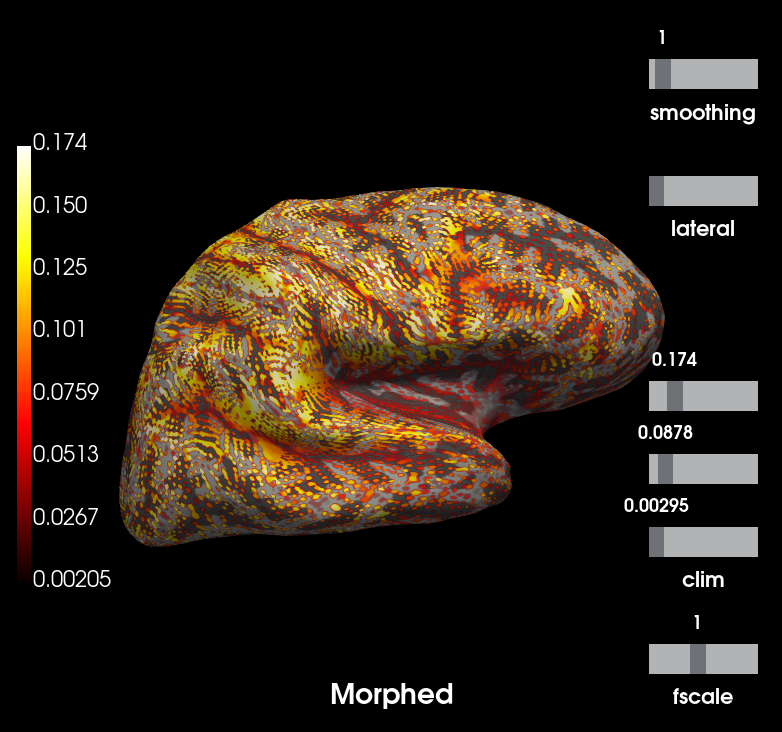
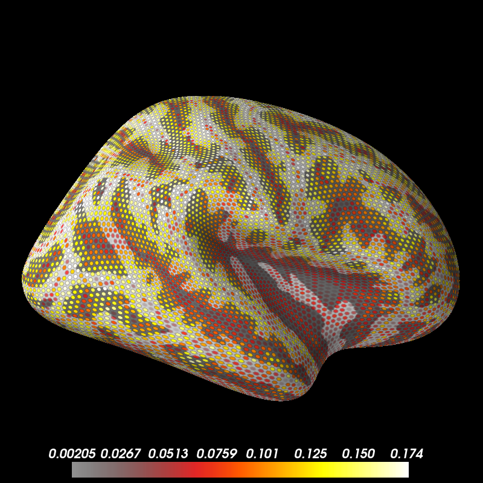

Note
Click here to download the full example code
Use source space morphing¶
This example shows how to use source space morphing (as opposed to
SourceEstimate morphing) to create data that can be compared
between subjects.
Warning
Source space morphing will likely lead to source spaces that are less evenly sampled than source spaces created for individual subjects. Use with caution and check effects on localization before use.
- 
- 
Out:
Read a total of 3 projection items:
PCA-v1 (1 x 102) idle
PCA-v2 (1 x 102) idle
PCA-v3 (1 x 102) idle
Reading a source space...
[done]
Reading a source space...
[done]
2 source spaces read
Reading destination surface /home/circleci/mne_data/MNE-sample-data/subjects/sample/surf/lh.white
Triangle neighbors and vertex normals...
Mapping lh fsaverage -> sample (nearest neighbor)...
[done]
Reading destination surface /home/circleci/mne_data/MNE-sample-data/subjects/sample/surf/rh.white
Triangle neighbors and vertex normals...
Mapping rh fsaverage -> sample (nearest neighbor)...
[done]
Source space : <SourceSpaces: [<surface (lh), n_vertices=155407, n_used=10242>, <surface (rh), n_vertices=156866, n_used=10242>] MRI (surface RAS) coords, subject 'sample'>
MRI -> head transform : /home/circleci/mne_data/MNE-sample-data/MEG/sample/sample_audvis_raw-trans.fif
Measurement data : instance of Info
Conductor model : /home/circleci/mne_data/MNE-sample-data/subjects/sample/bem/sample-5120-bem-sol.fif
Accurate field computations
Do computations in head coordinates
Free source orientations
Read 2 source spaces a total of 20484 active source locations
Coordinate transformation: MRI (surface RAS) -> head
0.999310 0.009985 -0.035787 -3.17 mm
0.012759 0.812405 0.582954 6.86 mm
0.034894 -0.583008 0.811716 28.88 mm
0.000000 0.000000 0.000000 1.00
Read 306 MEG channels from info
99 coil definitions read
Coordinate transformation: MEG device -> head
0.991420 -0.039936 -0.124467 -6.13 mm
0.060661 0.984012 0.167456 0.06 mm
0.115790 -0.173570 0.977991 64.74 mm
0.000000 0.000000 0.000000 1.00
MEG coil definitions created in head coordinates.
Source spaces are now in head coordinates.
Setting up the BEM model using /home/circleci/mne_data/MNE-sample-data/subjects/sample/bem/sample-5120-bem-sol.fif...
Loading surfaces...
Homogeneous model surface loaded.
Loading the solution matrix...
Loaded linear_collocation BEM solution from /home/circleci/mne_data/MNE-sample-data/subjects/sample/bem/sample-5120-bem-sol.fif
Employing the head->MRI coordinate transform with the BEM model.
BEM model sample-5120-bem-sol.fif is now set up
Source spaces are in head coordinates.
Checking that the sources are inside the surface (will take a few...)
Skipping interior check for 2154 sources that fit inside a sphere of radius 43.6 mm
Skipping solid angle check for 9 points using Qhull
9 source space points omitted because they are outside the inner skull surface.
Skipping interior check for 2113 sources that fit inside a sphere of radius 43.6 mm
Skipping solid angle check for 4 points using Qhull
5 source space points omitted because they are outside the inner skull surface.
Setting up compensation data...
No compensation set. Nothing more to do.
Composing the field computation matrix...
Computing MEG at 20470 source locations (free orientations)...
Finished.
102 out of 306 channels remain after picking
Mapping lh fsaverage -> sample (nearest neighbor)...
Mapping rh fsaverage -> sample (nearest neighbor)...
Using control points [0.00205101 0.08784125 0.17433707]
Using control points [0.00205101 0.08784125 0.17433707]
# Authors: Denis A. Engemann <denis.engemann@gmail.com>
# Eric larson <larson.eric.d@gmail.com>
#
# License: BSD (3-clause)
import os.path as op
import mne
data_path = mne.datasets.sample.data_path()
subjects_dir = op.join(data_path, 'subjects')
fname_trans = op.join(data_path, 'MEG', 'sample',
'sample_audvis_raw-trans.fif')
fname_bem = op.join(subjects_dir, 'sample', 'bem',
'sample-5120-bem-sol.fif')
fname_src_fs = op.join(subjects_dir, 'fsaverage', 'bem',
'fsaverage-ico-5-src.fif')
raw_fname = op.join(data_path, 'MEG', 'sample', 'sample_audvis_raw.fif')
# Get relevant channel information
info = mne.io.read_info(raw_fname)
info = mne.pick_info(info, mne.pick_types(info, meg=True, eeg=False,
exclude=[]))
# Morph fsaverage's source space to sample
src_fs = mne.read_source_spaces(fname_src_fs)
src_morph = mne.morph_source_spaces(src_fs, subject_to='sample',
subjects_dir=subjects_dir)
# Compute the forward with our morphed source space
fwd = mne.make_forward_solution(info, trans=fname_trans,
src=src_morph, bem=fname_bem)
mag_map = mne.sensitivity_map(fwd, ch_type='mag')
# Return this SourceEstimate (on sample's surfaces) to fsaverage's surfaces
mag_map_fs = mag_map.to_original_src(src_fs, subjects_dir=subjects_dir)
# Plot the result, which tracks the sulcal-gyral folding
# outliers may occur, we'll place the cutoff at 99 percent.
kwargs = dict(clim=dict(kind='percent', lims=[0, 50, 99]),
# no smoothing, let's see the dipoles on the cortex.
smoothing_steps=1, hemi='rh', views=['lat'])
# Now note that the dipoles on fsaverage are almost equidistant while
# morphing will distribute the dipoles unevenly across the given subject's
# cortical surface to achieve the closest approximation to the average brain.
# Our testing code suggests a correlation of higher than 0.99.
brain_subject = mag_map.plot( # plot forward in subject source space (morphed)
time_label='Morphed', subjects_dir=subjects_dir, **kwargs)
brain_fs = mag_map_fs.plot( # plot forward in original source space (remapped)
time_label='Remapped', subjects_dir=subjects_dir, **kwargs)
Total running time of the script: ( 0 minutes 32.964 seconds)
Estimated memory usage: 295 MB